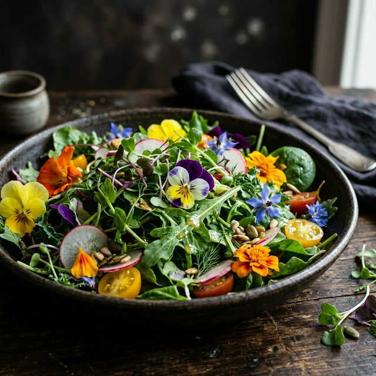
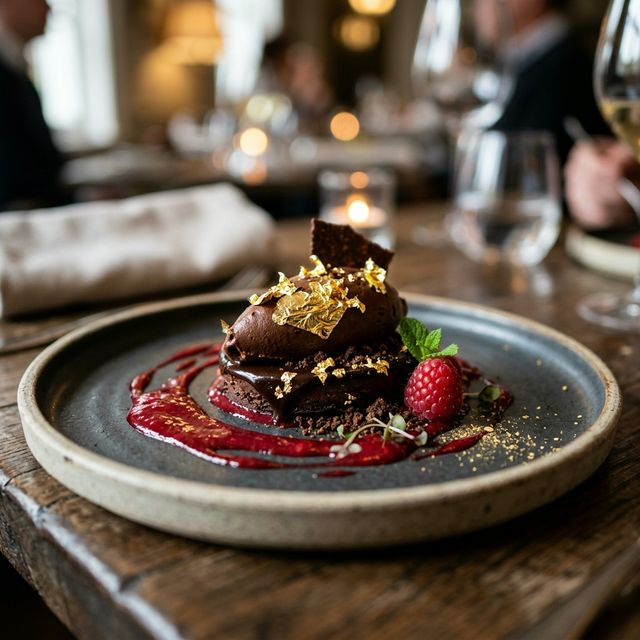

A Menu of Modern Solutions
Specialized Solutions
I don't just 'make websites'. I solve operational headaches and drive revenue through kitchen-aware tech.

Edition #01
The 'Local Hero'
The 'Local Hero'
Presence
Dominating your local market with a high-performance brand website and surgical SEO targeting. €1,999 one-time.
Secure Your Area

